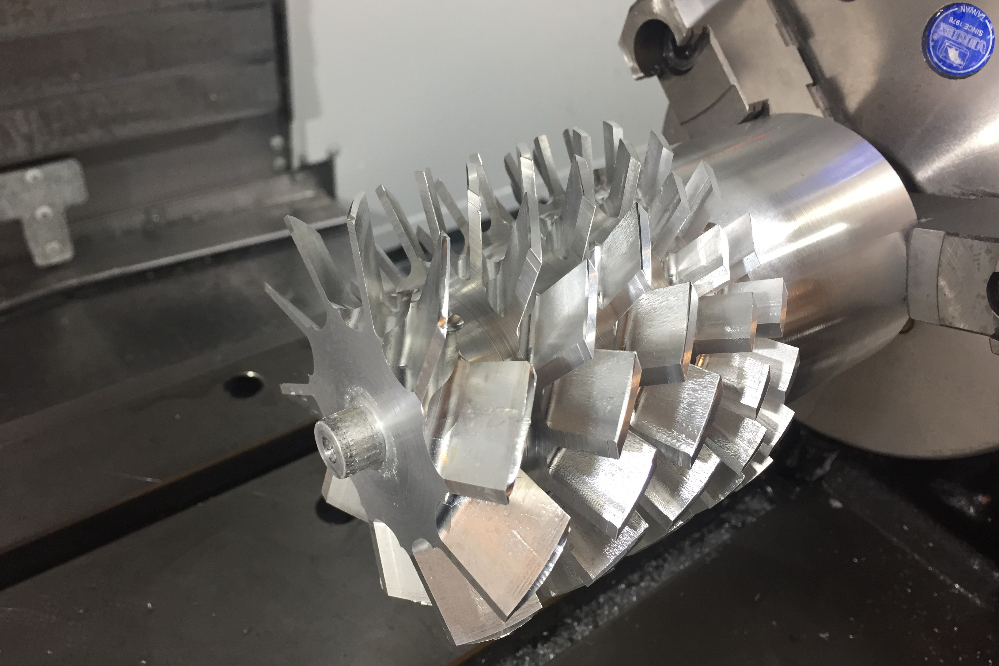

The rotor with the grooves for the stages turned, before blades were machined.
Turbomolecular Pump (Spring 2020)
Spring 2020
A specialized pump for obtaining extremely deep vacuums

The rotor after machining the blades.
A turbomolecular pump is a kind of vacuum pump used to generate extremely deep vacuums from an initial "rough" vacuum. They can take a ~1-10Pa vacuum from a typical vacuum pump and get it down by multiple orders of magnitude. I hope to be able to get to 1 mPa with my pump. My current design uses 5 stages (1 large stage, 2 medium stages, and 2 small stages) and hopefully will run around 50k RPM. The current bearings are cheap ceramic bearings from Amazon (we'll see if they survive).
The rotor has a ring of alternating magnets close to a non-conductive plate that makes up the back of the pump. On the other side (in atmosphere) is a aluminum disk that is spun by the motor. The magnets create induced currents in the disk, like an eddy current brake, and this transmits torque to the rotor. I may add copper coils to increase the efficiency (the entire ring can't be copper because copper has too low a strength-to-weight ratio and would burst at these RPM.) Because I'm going with the induction-method of driving, as opposed to a direct magnetic coupling, I will need to seperately measure rotor RPM, since it will not be the same as the driving RPM. I can use the information about the relative RPM between the induction ring and the rotor to calculate the efficiency of the coupling to see if I'm wasting too much energy to eddy currents and even more helpfully, I can easily find the power delivered specifically to the rotor, bypassing the efficiency of the motor, belt, eddy currents, etc. and focus only on the power used to pump (and energy into the rotor bearings).
The rotor with the grooves for the stages turned, before blades were machined.
The first step was to turn the rotor on the lathe to form the spaces between stages of blades where the stators will be (as seen above). After this, the blades were machined one-by-one with a 3-axis Haas VF-2 CNC machine (Thanks to Dan Gilbert at MIT for access to this!). This 3-axis limit meant the blades had to be done individually, and then the part was manually indexed with a rotary table. This meant I had 3 programs, one for each size of blade, and simply ran the program again for each blade. Cycle time for each blade was only about 2-3 minutes, but there are 66 blades, so it took a while. At all stages, great care was taken to maintain concentricity because balance will be critical to the pump not exploding/detroying bearings. I would have loved to use that Haas VF-2 for the rest of the project, but right after this MIT evacuated all their undergraduates, so the rest of the machining work will be done on my Hermle UWF 1000 at home or done manually.
The induction disk is driven by a timing belt that increases the speed by about 4 times, so the motor is placed next to the main chamber, rather than inline. Initially I tried to use a normal brushed DC motor of about 100W, but this was clearly not enough, and it rapidly would overheat when I tried to start it because there is so much inertia in the rotor and that motor is at very low and very inefficient speeds for too long. I then moved to a much larger 1.4kW water-cooled brushless motor. Then powering the motor became a problem. These motors are designed for very high currents at moderately low voltages because they are intended for RC boats and such with batteries. I want to run this off mains power, so I'm working on adapting a power supply to drive the system at about 800W, which will hopefully be sufficient. Since the motor and the speed controller are water-cooled, I also had to build housing for a little centrifugal pump I had and made a little water tank to circulate water around the system. I anticipate most of the heat generation to occur only during startup, with hopefully less during steady-state operation.